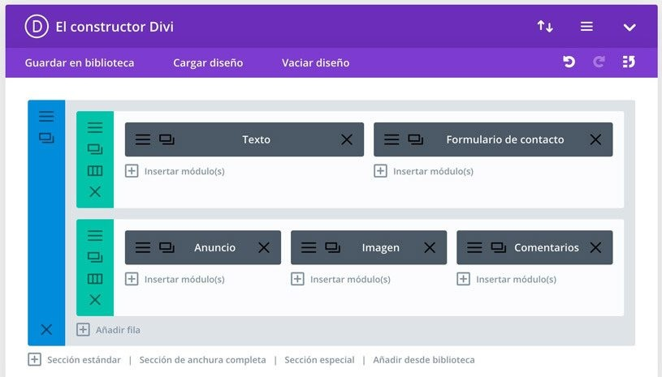
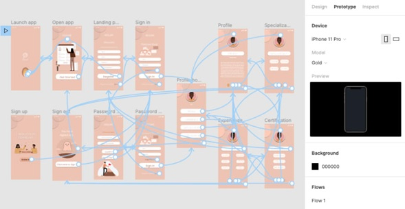
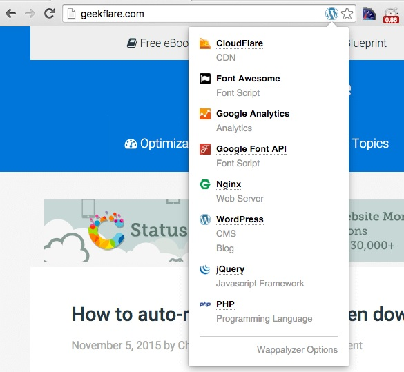

Este gestor de contenidos (CMS por sus siglas en inglés) es una de las plataformas de sitios web más populares a nivel mundial. De hecho, la empresa afirma que el 38% de la web se ha creado con WordPress.
¿En qué radica su popularidad? Que es de código abierto, lo cual significa que es una plataforma completamente gratuita, y cuenta con docenas de diseños para que elijas el que más te guste y lo modifiques según la naturaleza de tu proyecto.
Características principales de WordPress:
Te permite crear un sitio tan sencillo o robusto como quieras, ya sea un blog personal, una página informativa, un portafolio multimedia o un portal empresarial.
Puedes empezar de manera gratuita y luego contratar alguno de los planes de hosting WordPress para tener servicios administrados (es decir, sin que tengas que configurar los recursos del alojamiento), complementos (plugins) y plantillas de diseño premium, seguridad web y más.
Eliges entre decenas de plantillas de diseño personalizables (gratuitas o de pago).
Actualizas tu sitio web desde dispositivos móviles o desktop.
Divi
En torno a WordPress encontrarás diversos editores de texto/código, así como plugins que puedes instalar en tu página web para ampliar o extender las funciones que WordPress tiene por defecto.
Uno de los temas de WordPress más populares es Divi, un plugin que sirve para que puedas crear una página web profesional de manera sencilla gracias a la función de “arrastrar y soltar”.

Características principales de Divi:
Es un editor de páginas web extremadamente visual e intuitivo, el cual pueden usar tanto diseñadores profesionales como aficionados, sin requerir conocimientos de programación.
Tiene la función de “arrastrar y soltar” elementos. Por ejemplo, puedes agregar secciones, texto, imágenes o un blog con tan solo usar su constructor.
Puedes elegir entre estas opciones para crear tu página: construir de cero; elegir un tema prediseñado; clonar una página existente (es decir, algo que ya hayas creado).
Para usar sus funciones más avanzadas y acceder al catálogo completo de temas, deberás pagar una membresía anual o de por vida.
Prestashop
Además de las Tiendas en Línea y WooCommerce, otra plataforma popular para vender por internet es Prestashop, otra plataforma de código abierto que permite establecer tiendas online en la nube o a través de hosting propio.
En general, se trata de una herramienta accesible, fácil de usar, simple y personalizable.
Características principales de Prestashop:
Puedes subir productos rápidamente, crear cupones de descuento, visualizar estadísticas de ventas y la actividad de los clientes, entre otras cosas.
Puedes mostrar productos, descuentos y precios basados en la ubicación geográfica, convirtiéndose en una gran ventaja si quieres expandir tus ventas fuera de tus fronteras.
Tienes acceso a la Comunidad de Prestashop, donde muchos usuarios comparten consejos, tutoriales y experiencias personales con la plataforma para que tú aprendas de ellos.
El costo para lanzar tu tienda online es relativamente bajo y puedes escalarla fácilmente si requieres opciones más avanzadas.
Puedes generar facturas.
Figma
Figma es un software para crear webs, diseñar interfaces y editar gráficos vectoriales. Su principal objetivo es que cualquier equipo pueda conectarse en internet para diagramar y lanzar mejores diseños desde cero.

Características principales de Figma:
Es una herramienta online para diseñar interfaces, enfocada hacia los sitios web y las aplicaciones.
Puedes ocupar la plataforma para diseño de UX (Experiencia de Usuario) en las etapas de creación de wireframes, prototipado, pruebas o feedback de diseño e iteración.
Plataforma colaborativa en tiempo real, facilita aplicar cambios y aprobarlos al momento.
Wappalyzer
Esta extensión para navegadores web (disponible tanto para Google Chrome como para Firefox) es una pequeña genialidad. Con tan solo activarla e ingresar a cualquier sitio web, te va a mostrar los frameworks y herramientas que utiliza dicha página, por ejemplo: si está basada en un CMS o una plataforma de e-commerce, el tipo de software del servidor, herramientas analíticas conectadas y más.

Obviamente, no podrás ver el detalle completo del código, pero el simple hecho de conocer su base es sumamente útil para tener un punto de partida desde donde hacer un análisis de competencia, así como de la tecnología y lenguajes de programación que te ayudarán a servir mejor con tu sitio web a clientes y prospectos.